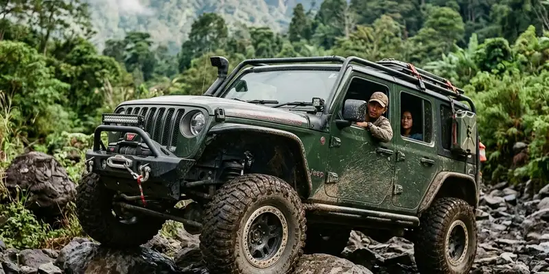

Offroad adalah aktivitas berkendara di luar jalan aspal menggunakan kendaraan yang dirancang atau dimodifikasi untuk melewati medan berat seperti lumpur, bebatuan, dan tanjakan. Aktivitas ini kini populer sebagai kegiatan akhir pekan bersama keluarga maupun komunitas.
Ringkasan Inti
- Offroad adalah kegiatan berkendara di medan tidak beraspal yang menantang.
- Aktivitas ini umumnya menggunakan kendaraan 4x4 atau motor trail.
- Offroad berkembang menjadi wisata rekreasi akhir pekan yang dikelola vendor outbound.
- Keselamatan dan perlengkapan yang tepat menjadi faktor penting sebelum ikut serta.
- Banyak komunitas offroad terbentuk karena kesamaan minat pada tantangan alam terbuka.
Apa Arti Offroad Secara Umum?
Arti offroad secara umum adalah kegiatan mengemudikan kendaraan di jalur non-aspal yang memiliki kontur alami seperti tanah, pasir, batu, atau genangan air. Istilah ini berasal dari bahasa Inggris "off the road" yang berarti keluar dari jalur jalan biasa.
Dalam praktiknya, offroad tidak hanya soal kendaraan, tetapi juga soal keterampilan membaca medan, mengatur tekanan ban, dan mengendalikan kendaraan pada permukaan yang tidak stabil. Karena itu, offroad sering dianggap sebagai kombinasi antara olahraga otomotif dan aktivitas petualangan di alam terbuka.
Secara umum, aktivitas ini terbagi menjadi dua kategori besar, yaitu offroad rekreasi yang ditujukan untuk hiburan dan wisata, serta offroad kompetisi yang menekankan kecepatan dan ketangkasan dalam ajang balap tertentu.
Mengapa Offroad Disebut Aktivitas Akhir Pekan yang Populer?
Offroad disebut aktivitas akhir pekan populer karena menawarkan pengalaman berbeda dari rutinitas harian, yaitu tantangan fisik, kebersamaan, dan kedekatan dengan alam. Banyak vendor outbound kini menyediakan paket offroad singkat untuk wisatawan.
Popularitas ini didukung oleh beberapa faktor:
- Meningkatnya minat masyarakat urban terhadap kegiatan luar ruang setelah rutinitas kerja yang padat.
- Kemudahan akses paket wisata offroad melalui vendor outbound yang menyediakan kendaraan, pemandu, dan jalur yang sudah disiapkan.
- Media sosial yang membuat konten petualangan offroad semakin dikenal luas dan menarik minat generasi muda.
- Sifat aktivitas yang fleksibel, karena dapat dilakukan dalam waktu singkat, seperti setengah hari atau satu hari penuh, sehingga cocok untuk akhir pekan.
Secara umum, tren wisata berbasis pengalaman dan aktivitas luar ruang mengalami peningkatan signifikan pada beberapa tahun terakhir, dan offroad menjadi salah satu kategori yang tumbuh cukup pesat di antara pilihan wisata petualangan lain. Menurut laporan industri pariwisata petualangan, minat terhadap wisata berbasis aktivitas fisik dan alam terbuka meningkat konsisten sejak periode pascapandemi hingga 2025.

Modifikasi kendaraan dan pemilihan jalur yang tepat adalah kunci utama menikmati offroad.
Apa Saja Jenis Kendaraan yang Digunakan untuk Offroad?
Jenis kendaraan offroad umumnya dibagi menjadi kendaraan roda empat penggerak 4x4, motor trail, dan ATV, yang masing-masing memiliki karakteristik berbeda sesuai medan yang dituju.
Beberapa jenis kendaraan yang umum digunakan:
- Mobil 4x4 dengan modifikasi ban pacul dan suspensi tinggi untuk medan berlumpur dan berbatu.
- Motor trail yang ringan dan lincah, cocok untuk jalur sempit dan menanjak.
- ATV (All Terrain Vehicle) yang stabil untuk pemula karena memiliki empat roda dengan pijakan lebar.
- Truk offroad modifikasi yang digunakan pada kompetisi atau ekspedisi jarak jauh.
Pemilihan kendaraan biasanya disesuaikan dengan tingkat kesulitan medan dan pengalaman peserta, terutama bagi pemula yang baru pertama kali mencoba aktivitas ini.
Apa Manfaat Mengikuti Kegiatan Offroad?
Manfaat mengikuti kegiatan offroad meliputi peningkatan keterampilan berkendara, pelepasan stres, dan mempererat kebersamaan dalam kelompok atau keluarga selama aktivitas berlangsung.
Beberapa manfaat yang umum dirasakan peserta:
- Melatih konsentrasi dan refleks saat menghadapi medan yang tidak terduga.
- Memberikan pengalaman baru yang berbeda dari aktivitas rutin sehari-hari.
- Mempererat hubungan sosial antaranggota komunitas atau keluarga yang ikut serta.
- Menjadi sarana rekreasi yang menggabungkan unsur tantangan dan kedekatan dengan alam.
Meski demikian, manfaat ini dapat bervariasi tergantung pengalaman, kondisi fisik peserta, dan tingkat kesulitan jalur yang dipilih.
Apa Saja Faktor yang Perlu Diperhatikan Sebelum Offroad?
Faktor yang perlu diperhatikan sebelum offroad meliputi kondisi kendaraan, perlengkapan keselamatan, cuaca, dan pemilihan vendor atau pemandu yang berpengalaman di jalur tersebut.
Beberapa hal yang umumnya menjadi perhatian:
- Kondisi ban, rem, dan sistem penggerak kendaraan harus diperiksa sebelum berangkat.
- Perlengkapan keselamatan seperti helm, sabuk pengaman, dan alat komunikasi sebaiknya disiapkan.
- Cuaca menjadi faktor penting karena medan basah dapat meningkatkan risiko tergelincir atau terjebak.
- Vendor atau penyedia jasa outbound sebaiknya memiliki pemandu berpengalaman dan jalur yang sudah dipetakan.
Bagi pemula, sangat disarankan untuk mengikuti paket offroad yang dipandu oleh vendor resmi agar risiko dapat diminimalkan.
Apa Kesalahan Umum yang Sering Terjadi Saat Offroad?
Kesalahan umum saat offroad meliputi memaksakan kendaraan melewati medan di luar kemampuannya, kurangnya persiapan perlengkapan, dan mengabaikan arahan pemandu selama kegiatan berlangsung.
Beberapa kesalahan yang kerap ditemui:
- Tidak menyesuaikan tekanan ban dengan kondisi medan yang dilalui.
- Mengemudi terlalu cepat pada jalur menurun atau berbatu tajam.
- Mengabaikan briefing keselamatan yang diberikan sebelum kegiatan dimulai.
- Tidak membawa perlengkapan darurat seperti tali derek atau alat komunikasi cadangan.
Menghindari kesalahan-kesalahan ini dapat membantu peserta menikmati aktivitas offroad dengan lebih aman dan nyaman.
Bagaimana Cara Memilih Vendor Offroad yang Tepat?
Cara memilih vendor offroad yang tepat adalah dengan memeriksa reputasi, pengalaman pemandu, kelengkapan alat keselamatan, dan kejelasan informasi paket yang ditawarkan sebelum melakukan pemesanan.
Beberapa langkah yang dapat dilakukan:
- Membaca ulasan atau testimoni dari peserta sebelumnya secara umum untuk menilai kualitas layanan.
- Menanyakan detail perlengkapan keselamatan yang disediakan selama kegiatan.
- Memastikan pemandu memiliki pengalaman pada jalur yang akan dilalui.
- Membandingkan beberapa vendor untuk melihat kesesuaian harga dan fasilitas yang ditawarkan.
Pemilihan vendor yang tepat dapat sangat memengaruhi kenyamanan dan keamanan selama aktivitas offroad berlangsung.
Kesimpulan
Offroad adalah aktivitas berkendara di medan tidak beraspal yang kini menjadi pilihan populer untuk mengisi akhir pekan. Sebelum mengikuti kegiatan ini, pastikan kendaraan dalam kondisi baik, perlengkapan keselamatan lengkap, dan vendor yang dipilih memiliki pengalaman serta reputasi yang jelas agar aktivitas berjalan aman dan menyenangkan.
FAQ
Offroad adalah kegiatan berkendara di luar jalan aspal menggunakan kendaraan yang dirancang untuk medan berat seperti lumpur, tanah, dan bebatuan.
Offroad dapat aman untuk pemula selama mengikuti arahan pemandu, menggunakan perlengkapan keselamatan yang sesuai, dan memilih jalur dengan tingkat kesulitan rendah terlebih dahulu.
Offroad umumnya memerlukan kendaraan dengan modifikasi tertentu seperti ban pacul dan suspensi tinggi, meskipun beberapa vendor menyediakan kendaraan yang sudah disiapkan untuk peserta.
Durasi kegiatan offroad dapat bervariasi, mulai dari beberapa jam untuk paket singkat hingga satu hari penuh untuk paket ekspedisi, tergantung jalur dan vendor yang dipilih.
Perbedaan utama offroad dengan touring biasa terletak pada jenis medan, di mana offroad melalui jalur tidak beraspal dan menantang, sementara touring umumnya menggunakan jalan aspal yang lebih landai.